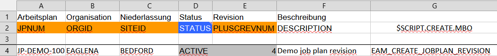

Creating revision-controlled objects during import¶
Since version 6.3.0.0
Revision-controlled Maximo objects must be created through their business logic. A new Job Plan revision, for example, is not an independent JOBPLAN record: Maximo must generate it through revise() so that the revision number, status transitions, copied child records, and revision history remain consistent.
A normal maximex insert uses MboSet.add(). That is correct for ordinary new records and for an initial revision, but it is not sufficient when the intended operation is “create the next revision”. Creating such a row with add() can produce a record that looks valid while bypassing Maximo’s revision logic and corrupting the revision chain.
Use the optional Excel control column $SCRIPT.CREATE.MBO to replace only the Mbo creation step with an Automation Script.
Behavior of $SCRIPT.CREATE.MBO¶
| Excel value | Import behavior |
|---|---|
| Column missing or cell empty | maximex creates the main object with the normal targetobjset.add() path. |
| Script name present | maximex executes the named Automation Script. The script must create the new Mbo and assign it to result. There is no fallback to add() if the script fails. |
After the script returns, maximex continues with the normal import: it applies the remaining Excel values, processes child or specification data when applicable, and saves the supplied target MboSet.
The Automation Script must meet these requirements:
- Create an active Jython library script without a launch point.
- Leave the Automation Script Variables table empty; maximex supplies the runtime bindings directly.
- Create the new Mbo in the supplied
targetobjset. - Assign the new, unsaved Mbo to the single supported output variable
result. - Do not use
mbo,createdMbo,launchPoint, orscriptNameas custom output bindings. - Do not call
save()in the script. The import worker owns the save operation.
Minimal example: importing a Job Plan revision¶
The following example imports revision 4 of Job Plan JP-DEMO-100. An earlier active revision must already exist in Maximo, and revision 4 must not yet exist.
The template was generated for the Job Plans application. The technical column $SCRIPT.CREATE.MBO was then added manually to the second header row, and the Automation Script name was entered in the import row.

The relevant technical columns and values are:
JPNUM |
ORGID |
SITEID |
STATUS |
PLUSCREVNUM |
DESCRIPTION |
$SCRIPT.CREATE.MBO |
|---|---|---|---|---|---|---|
JP-DEMO-100 |
EAGLENA |
BEDFORD |
ACTIVE |
4 |
Demo job plan revision |
EAM_CREATE_JOBPLAN_REVISION |
The second worksheet row contains the technical attribute names used by maximex. The label in the first row is only descriptive; the control header in row 2 must be exactly $SCRIPT.CREATE.MBO.
PLUSCREVNUM contains the requested target revision. The script does not set this key directly. Maximo generates it through revise(), and maximex keeps and checks the generated key instead of overwriting it with the Excel value.
STATUS=ACTIVE is applied after the other editable values because the script enables deferred status processing. This lets Maximo first create and populate the pending revision and only then activate it.
Downloadable Job Plan import example¶
Download the Job Plan import example (XLSX)
Use the Simple worksheet as a starting point. Row 2 contains the technical column names, row 3 is empty, and the sample import data starts in row 4. The workbook also includes the DataDictionary and Farblegende worksheets.
The supplied row contains Job Plan JP-DEMO-101, organization EAGLENA, site BEDFORD, status ACTIVE, and target revision 1.
Important: The download is a starting template, not a fully configured revision import. Cell G4 ($SCRIPT.CREATE.MBO) is empty. If the row enters the creation path with this cell left empty, maximex uses the normal add() path instead of executing the revision script.
Before running a test import:
- Create and activate
EAM_CREATE_JOBPLAN_REVISIONas described in the next section. - Adapt
A4:C4(JPNUM,ORGID,SITEID) to your test environment and setE4(PLUSCREVNUM) to the next revision to create. An earlier active revision must already exist, and the requested target revision must not yet exist. - Enter
EAM_CREATE_JOBPLAN_REVISIONinG4. Enter a description inF4as needed. LeaveI4(JOBPLANID) empty for this example. - Import the prepared workbook through maximex in the Job Plans application in a test environment. The supplied value
ACTIVEinD4requests activation after the other editable values have been applied.
To reproduce the illustrative row above, use JP-DEMO-100 in A4, 4 in E4, and Demo job plan revision in F4, provided the required source revision exists in your environment.
Minimal Automation Script¶
Create an active Jython Automation Script named EAM_CREATE_JOBPLAN_REVISION, without a launch point and without configured script variables.
The following script is intentionally a minimal working example. It omits validation and error handling so that the creation contract remains easy to see.
# EAM_CREATE_JOBPLAN_REVISION
# Library script: no launch point and no configured variables.
#
# A production script should also validate the Excel values, ensure that the
# target revision does not already exist, select exactly one revisable source,
# call canRevise(), and provide useful createMboStage/createMboDiagnostic data.
# For EXTENDED imports whose revision API copies child records, also set
# copiedChildrenExpected = True.
# revise() generates the Job Plan keys. Do not overwrite them from Excel.
preserveGeneratedKeys = True
# Apply the requested STATUS only after the remaining import values.
deferStatus = True
# Find the active source revision in the same MboSet that maximex will save.
targetobjset.resetQbe()
targetobjset.setQbeExactMatch(True)
targetobjset.setQbe("JPNUM", excelValues.get("JPNUM"))
targetobjset.setQbe("ORGID", excelValues.get("ORGID"))
targetobjset.setQbe("SITEID", excelValues.get("SITEID"))
targetobjset.setQbe("STATUS", "ACTIVE")
targetobjset.reset()
source = targetobjset.moveFirst()
# Remove the source query before revise() adds the new revision to this set.
targetobjset.resetQbe()
revision_description = excelValues.get("$REVISIONDESCRIPTION") or ""
result = source.revise(revision_description)
The important line is:
result is the only supported output variable. It must contain the new, unsaved Mbo returned by the Maximo business method.
Execution flow¶
For the sample row, maximex performs these steps:
- It searches for
JP-DEMO-100, siteBEDFORD, organizationEAGLENA, revision4. - Because revision
4does not exist, the row enters the creation path. $SCRIPT.CREATE.MBOinvokesEAM_CREATE_JOBPLAN_REVISIONinstead of callingadd().- The script loads the active source Job Plan and calls
revise(). - The new revision is returned in
result. - maximex applies
DESCRIPTIONand any other Excel values. - Because
deferStatus=True, maximex appliesSTATUS=ACTIVElast. - maximex saves the target MboSet.
This preserves Maximo’s normal revision behavior and avoids creating an independent record that merely has a revision number assigned to it.
Optional revision description¶
The minimal spreadsheet does not require a revision description. To pass one to the example script, add another technical column:
The script already reads this value and passes an empty string to revise() when the column is absent or empty.
The downloadable workbook already includes $REVISIONDESCRIPTION in H2. Enter an optional revision description in H4; no additional column is needed in that file.
When the lookup finds the source object instead of the new target¶
Normally, maximex first uses the values from the Excel row to look for an existing target Mbo.
- If no matching Mbo exists, the row enters the creation path and
$SCRIPT.CREATE.MBOcan be used instead of the normaladd()operation. - If a matching Mbo already exists, maximex normally treats the row as an update. In that case, the creation script is not executed.
For Job Plans, this normally works without any additional option. PLUSCREVNUM identifies the requested target revision, so a revision that still needs to be created is not found by the initial lookup. The row therefore enters the creation path automatically.
Some revision-controlled objects work differently. Their import keys may identify the existing source object from which Maximo is expected to create a new revision. The normal lookup then finds that source object and maximex would interpret the row as an update, even though the intended operation is to create a new Mbo through a method such as revise().
In this situation, add the following technical column:
and set its value to:
When force mode is enabled, maximex deliberately skips the normal target lookup and enters the creation path. $SCRIPT.CREATE.MBO is then executed and the Automation Script is responsible for locating the appropriate source Mbo and creating the new target Mbo.
For example:
| Object key | $SCRIPT.CREATE.MBO |
$SCRIPT.CREATE.MBO.FORCE |
|---|---|---|
| Identifies an existing source revision | MY_CREATE_REVISION_SCRIPT |
true |
The creation script can then use the supplied Excel values to locate the source object and call the appropriate Maximo business method.
Warning
$SCRIPT.CREATE.MBO.FORCE does not mean "overwrite an existing target" or "create another copy even if the requested target already exists".
Force mode only bypasses maximex's normal lookup decision. The Automation Script must still validate that the requested new revision or target object can actually be created and should reject the operation if the intended target already exists.
Do not use $SCRIPT.CREATE.MBO.FORCE together with:
- a populated target unique ID,
$UPDATEONLY=true, or$DELETE=true.
Use force mode only when the normal lookup would find an existing source object and therefore prevent the row from entering the creation path.
Initial revisions and ordinary objects¶
The hook is optional:
- For an ordinary new Mbo, leave
$SCRIPT.CREATE.MBOempty and use the normal insert path. - For Job Plan revision
0, leave$SCRIPT.CREATE.MBOempty when the initial record can be created normally. - Use a creation script only when Maximo requires a business method such as
revise(),duplicate(), or another object-specific factory operation.